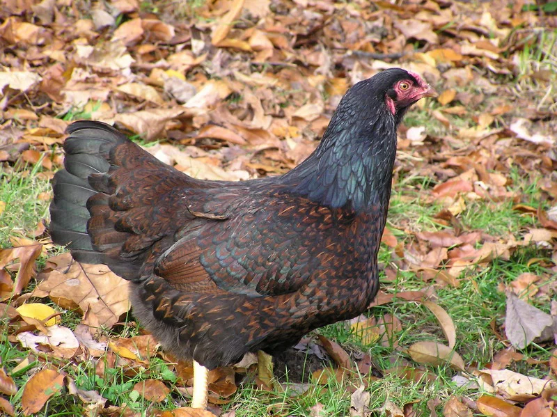

Cornish: la robusta de carne, en versión Dark

La Cornish, llamada también Indian Game (Combatiente Indio), es una raza inglesa originaria de Cornualles, creada en el siglo XIX. Nació del cruce de gallos de combate malayos y Old English Game con gallinas locales, buscando un ave de carne con el pecho ancho y musculoso, y se convirtió en la raza de carne por excelencia del mundo anglosajón: es la base de los pollos de engorde modernos, porque el cruce Cornish × Plymouth Rock dio el broiler industrial. La variedad Dark (oscura) es la más conocida y la que representa a la raza en esta ficha. No debe confundirse con el híbrido comercial Cornish Cross.
Origen e historia
La Cornish, llamada también Indian Game (Combatiente Indio), es una raza inglesa originaria de Cornualles, creada en el siglo XIX. Nació del cruce de gallos de combate malayos y Old English Game con gallinas locales, buscando un ave de carne con el pecho ancho y musculoso, y se convirtió en la raza de carne por excelencia del mundo anglosajón: es la base de los pollos de engorde modernos, porque el cruce Cornish × Plymouth Rock dio el broiler industrial. La variedad Dark (oscura) es la más conocida y la que representa a la raza en esta ficha. En España se la conoce sobre todo por su nombre inglés, Cornish, y se cría en pequeños lotes de aficionados y en granjas de carne de calidad.
Características físicas
La gallina: ave grande y pesada, de 2,7 a 3,6 kg, de cuerpo ancho, bajo y musculoso, con el pecho muy prominente, las patas separadas y la espalda ancha: vista desde arriba, tiene forma de corazón. Su plumaje es duro y ceñido al cuerpo, de color oscuro con reflejos. Su cresta es de guisante (pequeña, con tres hileras de protuberancias), casi pegada a la cabeza, y las orejillas son rojas. Las patas son amarillas, gruesas y sin plumas, y la cola es corta y llevada baja.
El gallo: mayor, de 3,6 a 4,5 kg (algunos ejemplares superan los 5 kg), con el mismo cuerpo ancho y musculoso, el pecho aún más marcado y la postura erguida y desafiante. Su cresta de guisante es pequeña en proporción a su cabeza, lo que le da un aspecto fiero y compacto. Es un gallo que impone por su anchura más que por su altura.
Variedades de plumaje
La más conocida es la Dark Cornish (oscura): plumaje negro con el borde de las plumas en tonos rojizos y verdosos, y el gallo con la esclavina y el manto de color rojo oscuro brillante. Existen además la White (blanca), la Buff (leonada) y la Jubilee (moteada de blanco), entre otras. La Dark es la variedad de exposición clásica y la que se ve en la foto de esta ficha.
Puesta
Pone en torno a 160–180 huevos al año, de color marrón claro y tamaño medio. No es una gran ponedora, y además es muy clueca: la gallina se echa con facilidad y se queda en el nido semanas, lo que corta la puesta pero la convierte en una madre excelente. Los huevos son de cáscara fuerte.
Carácter
Tranquila, segura y algo dominante: es una gallina de movimientos lentos y pausados, que no se asusta con facilidad y que defiende su sitio en el corral. El gallo es territorial y puede ser agresivo con otros gallos, pero con las personas es manejable si se lo acostumbra desde joven. Es una raza de corral, no de jaula: necesita moverse para mantener la musculatura y la salud de las patas.
Cuidados, alimentación y alojamiento
Es una raza pesada y de crecimiento lento, y eso marca sus cuidados: necesita un gallinero con perchas bajas y fuertes (una Cornish no debe saltar desde alto, porque su peso le daña las patas) y nidales amplios a ras de suelo. Necesita espacio para caminar, pero no es una gran voladora: un cercado de 1,5 m basta. Come más que una ponedora ligera: pienso de crecimiento y de puesta con buena proteína, grano y forraje, sin exceso de energía para que no engorde demasiado y pierda fertilidad. Tarda en madurar: los pollos tardan meses en alcanzar su peso, y por eso su carne es más cara pero mucho más sabrosa. Hay que vigilar sus patas y su pecho, que son su punto débil si el suelo es duro o está mojado.
Para qué sirve
Carne: es su vocación histórica y su valor principal —el pollo Cornish, de crecimiento lento y carne firme y sabrosa, es un producto de calidad para venta directa y restauración. También sirve como madre y nodriza por su carácter clueco, y como raza ornamental de exposición, donde su cuerpo ancho y su plumaje duro se valoran mucho. No es una raza para quien busca muchos huevos.
Curiosidades
La Cornish es la madre del pollo broiler que se come en todo el mundo: sin ella no existiría la avicultura de carne moderna; su cuerpo en forma de corazón visto desde arriba es único entre las gallinas; su cresta de guisante es tan pequeña que en invierno casi no sufre quemaduras por frío; y la variedad enana (bantam) es popular en exposición, pero no debe confundirse con la estándar, que es la que da nombre a la raza.
Fotos de la raza
Foto de gallo pendiente: no se usa como foto representativa la foto del gallo que circula como Cornish, porque pertenece a la variedad enana (Indische Zwerg-Kämpfer, exposición de Frankenthal 2014) y no representa a la Cornish estándar. Foto de pareja moderna pendiente. Existe además una diapositiva histórica coloreada a mano (Canadá, c. 1920), solo como documento histórico, no como foto moderna.
Fotos y licencias
La foto de esta ficha es una fotografía real de dominio público. Se publica en WebP a partir del original, con su autora y su licencia.
- Gallina (foto principal): Misty Lundberg (propietaria; archivo subido por Taceas) — Dominio público (2006).

Fuentes
Datos raciales contrastados con la información de la raza: Cornish (The Livestock Conservancy).
Prepara tu lote y tu gallinero
Antes de comprar aves, calcula el espacio que necesitas, lo que costará alimentarlas y cuándo tendrás los primeros huevos.
Comprueba la normativa local: algunas zonas exigen registrar las aves o avisar al ayuntamiento. Revisa las normas de tu municipio antes de criar.